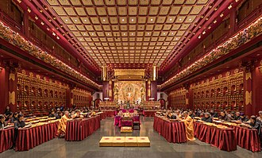
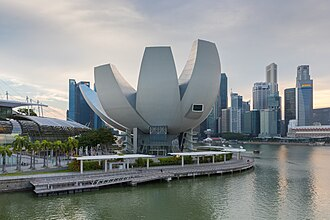

Исторические и справочные гербы


Singapore
Путеводитель. Объектов в этом выпуске: 31.
OTIUM — практика нарочитого досуга. В античном смысле otium — не побег от работы, а время, когда внимание возвращается к памяти, пейзажу и мысли — без прикладного дедлайна.
Мы выстраиваем маршруты для неспешного присутствия, а не для чек-листа достопримечательностей: важно быть в месте, а не «потреблять» виды.
OTIUM — не туроператор. Это приглашение пройтись, остановиться и оставить маршрут незавершённым, если свет на фасаде заслуживает ещё минуты.
Исторические и справочные гербы
Путеводитель. Объектов в этом выпуске: 31.
Сингапур — город-государство у пролива между Индийским и Тихим океанами.
Торговый факторий, британская колония, японская оккупация и независимое развитие превратили остров в финансовый хаб с высотной застройкой, садами и строгой урбанистикой. Многокультурная кухня и образование — основа идентичности.
Независимость 1965 года и жёсткая экономическая политика сделали остров «азиатским тигром»; контроль жилья и транспорта обеспечил порядок. Сегодня Сингапур — хаб финансов и логистики с многоязычным обществом китайцев, малайцев и индийцев.


Храм является важным центром буддийской культуры и религиозного туризма в регионе. Зуб Будды почитается во всём мире как символ просветления и духовного роста. Архитектурный стиль сочетает элементы китайского и традиционного сингапурского дизайна. Ежегодно здесь проводятся важные буддийские церемонии и фестивали. В храме хранятся также другие ценные буддийские артефакты.
Будда Зубной храм был основан в 1971 году буддистскими общинами Сингапура и Малайзии. Храм посвящён священному зубу Будды Шакьямуни, который считается одной из главных реликвий буддизма. Здание храма выполнено в традиционном сингапурском стиле с элементами китайской архитектуры, символизируя гармонию культур Юго-Восточной Азии. Храм привлекает паломников и туристов благодаря своей уникальной архитектуре и значимой религиозной ценности. Здесь хранится одна из важнейших буддийских реликвий.


Открытие театра состоялось в 2002 году. Его архитектура выполнена в стиле постмодернизма. На сцене Esplanade регулярно проходят международные гастроли известных артистов и музыкантов. Зал вмещает до 2400 зрителей. Театр является важным центром культурной жизни Сингапура.
Театр-эспланада построен в Сингапуре в конце XX века и стал знаковым культурным объектом города-государства. Архитекторы вдохновлялись формой раковины и разработали уникальный дизайн здания, который гармонично вписался в городской пейзаж Эспланады. Здание стало символом современной архитектуры и культуры Юго-Восточной Азии. Здание привлекает туристов и местных жителей благодаря уникальному дизайну и современному репертуару спектаклей, концертов и театральных постановок.

На территории форта находится старейший парк Сингапура, основанный ещё в XVIII веке. Здесь расположены руины старинного форта, построенного англичанами в 1867 году. Ежегодно здесь проводится фестиваль цветущих деревьев Cherry Blossom Festival. С вершины холма открывается панорамный вид на город. Форт Каннинг является популярным местом проведения свадебных церемоний.
Форт Каннинг был построен британцами в XIX веке как военная база и наблюдательный пункт. Со временем форт утратил военное значение, но остался важным культурным объектом Сингапура. Здесь проходили важные исторические события, включая встречу лидеров Малайи, Великобритании и Индонезии в 1961 году, что способствовало объединению стран Юго-Восточной Азии. Форт Каннинг привлекает туристов живописной природой и историческими достопримечательностями, позволяя насладиться спокойствием парка среди городской суеты.

На территории Gardens by the Bay расположены два ботанических сада: Сад орхидей и Сад суккулентов. Высота самого большого супердерева достигает 160 метров. Ежедневно в парке устраиваются световые шоу с проекциями на супердеревья. В саду есть зона отдыха с искусственным водопадом и кафе. Проект парка получил премию World Architecture News Awards.
Гardens by the Bay — парк-сад в Сингапуре, открытый в 2012 году. Проект реализован сингапурским агентством Urban Redevelopment Authority совместно с британской фирмой Grant Associates. Идея парка принадлежит Ли Куан Ю, первому премьер-министру страны. Архитекторы вдохновлялись природой Юго-Восточной Азии, создавая уникальный ландшафт с экзотическими растениями и современными архитектурными решениями. Парк привлекает туристов своими гигантскими супердеревьями и ботаническим садом, где представлены редкие растения со всего мира.


Первый пешеходный висячий мост Сингапура. Высота конструкции составляет около 35 метров над уровнем земли. Длина моста — примерно 90 метров. Имеет уникальную форму волны, символизирующую движение воды. Построен по проекту архитектурной фирмы DP Architects.
Мост Henderson Waves построен в 2008 году как часть проекта Henderson Reservoir Park. Это первый пешеходный висячий мост Сингапура, соединяющий холмы Bukit Timah и Henderson. Архитекторы вдохновлялись формой волн, отсюда название моста. Занимательная достопримечательность, популярная среди туристов благодаря необычной архитектуре и живописному виду на окрестности.

Jewel Changi Airport расположена прямо над третьим терминалом аэропорта Чанги. На территории комплекса находится самый большой в мире вертикальный сад SkyPark высотой 37 этажей. В Jewel Changi Airport расположен один из крупнейших крытых пляжей в мире — Sky Lagoon. Комплекс включает тематический парк Universal Studios Singapore, где представлены аттракционы и шоу по мотивам популярных фильмов и сериалов. Ежегодно Jewel Changi Airport посещает около 40 миллионов человек.
Международный аэропорт Чанги в Сингапуре открылся в 1981 году и изначально был небольшим терминалом, обслуживающим внутренние рейсы. Со временем аэропорт стал крупнейшим транспортным узлом Юго-Восточной Азии благодаря развитию инфраструктуры и внедрению инновационных решений. В 2011 году была открыта достопримечательность Jewel Changi Airport, ставшая одной из главных туристических точек города. Jewel Changi Airport привлекает туристов своими уникальными архитектурными решениями и развлекательными объектами, включая крупнейший в мире вертикальный сад и тематический парк Universal Studios Singapore.

Район расположен рядом с улицей Джалан-Серенгоун, где сосредоточены основные достопримечательности и магазины района. Здесь находится знаменитый Храм Шри Мариамман, построенный в викторианском стиле. Ежегодно в районе проходят яркие фестивали, такие как фестиваль Дивали и праздник урожая Тамил-Наду. Литл-Индия известна своей аутентичной индийской кухней и множеством ресторанов с местной едой. На главной улице района расположены многочисленные лавки с сувенирами ручной работы.
Литл-Индия Серангоун — исторический район Сингапура, сформировавшийся вокруг улицы Джалан-Серангоун. Район возник ещё в XIX веке, когда индийские рабочие приезжали сюда трудиться на хлопковые плантации. Со временем здесь обосновались иммигранты из Индии, создав уникальную культурную среду. Сегодня Литл-Индия является одним из главных туристических мест города-государства, известным своими яркими фестивалями, храмами и традиционной кухней. Литл-Индия привлекает туристов уникальной атмосферой, культурой и традициями Южной Азии.


Комплекс состоит из трех башен Marina Tower, Marina Design Tower и Marina View Tower. На крыше комплекса расположена смотровая площадка SkyPark высотой 200 метров. SkyPark является самой высокой открытой террасой в мире. В комплексе расположен знаменитый отель Marina Bay Sands Hotel с бассейнами на крыше. Ежедневно здесь проводятся световые шоу, привлекающие тысячи зрителей.
Marina Bay Sands — комплекс зданий в Сингапуре, открытый в 2011 году. Архитектор Норман Фостер создал уникальное строение, включающее три башни, соединенные общей крышей-галереей SkyPark. Проект стал символом современного Сингапура и одной из главных достопримечательностей города. Комплекс привлекает туристов благодаря необычной архитектуре, роскошному интерьеру и впечатляющему виду с SkyPark.


Перманская культура возникла во времена португальского и голландского колониального правления. На экспозиции представлены традиционные костюмы, украшения, предметы быта и ремесла перанканцев. Музей расположен в историческом здании XIX века, построенном в стиле викторианской архитектуры. Ежегодно музей посещают около 40 тысяч туристов и местных жителей. Коллекция музея включает редкие артефакты, отражающие повседневную жизнь перанканцев.
Музей перанканцев расположен в Сингапуре и рассказывает историю малайско-китайского народа, известного как перанканы. Этот народ сформировался в XVI веке на территории Малакки и Индонезии благодаря смешению культур Малайи и Китая. Музей был открыт в 2005 году и стал первым учреждением такого рода в Азии, посвящённым культуре перанканской диаспоры. Посещение музея позволяет лучше понять уникальную культуру и традиции малайско-китайских общин Юго-Восточной Азии.


Высота колеса составляет 165 метров. Оно вмещает 28 капсул, каждая из которых рассчитана на 28 человек. Колесо совершает полный оборот примерно за 30 минут. На верхней точке открывается вид на парк Маринера и набережную Кларк-Куэй. Ежегодно аттракцион посещают около миллиона туристов.
Сингапурский «Флайер» — крупнейший в мире колесо обозрения, построенное в 2008 году специально к празднованию десятилетия независимости Сингапура. Идея принадлежит архитектору Ренцо Пиано, известному своими инновационными проектами. Колесо стало символом города-государства и одной из главных достопримечательностей. «Флайер» привлекает туристов возможностью насладиться панорамным видом на город и близлежащие острова, а также стать частью впечатляющего городского пейзажа.


Собор был открыт в 1839 году. Архитектором стал английский архитектор Уильям Стиррс Гилпин. На фасаде собора установлены часы с четырьмя циферблатами. Интерьер храма украшен витражами и деревянными резными элементами. Рядом с собором находится кладбище с захоронениями британских колонистов.
Кафедральный собор святого Андрея был построен в XIX веке и является крупнейшим англиканским храмом Сингапура. Сооружение возведено в викторианском готическом стиле и долгое время выполняло функцию главного религиозного центра британской колонии. Сегодня собор продолжает оставаться значимым местом для верующих и туристов благодаря своей архитектуре и историческому наследию. Здание привлекает внимание своими величественными формами и атмосферой старинной колониальной эпохи, являясь важным культурным объектом города.

Здание выполнено в стиле мавританской архитектуры с элементами индийского и китайского влияния. На территории мечети расположен музей, рассказывающий историю ислама в регионе. Ежегодно здесь проводится фестиваль Курбан-Байрам, привлекающий тысячи верующих. Султанская мечеть является одной из старейших действующих мечетей Сингапура. Архитектурный комплекс включает минарет высотой около 46 метров.
Султанская мечеть была построена в конце XIX века по инициативе султана Абдуллы аль-Хусейна аль-Махмуда ас-Салеха, правившего Сингапурским султанатом. Здание стало символом исламской культуры города и важным местом поклонения мусульманского населения. Мечеть известна своей архитектурой, сочетающей элементы сингапурского колониального стиля и традиционного арабского дизайна. Мечеть привлекает туристов и паломников благодаря уникальной архитектуре и значимости в культурной жизни Сингапура.

Тиан Хок Кенг был возведён в 1840-х годах. Строительство храма финансировалось китайскими торговцами и рыбаками. Архитектурный стиль сочетает элементы традиционного китайского зодчества и западных влияний. Интерьер храма украшен живописью, резными деревянными панелями и керамическими украшениями. Храм служит местом паломничества и молитв для последователей учения Конфуция.
Храм Тиан Хок Ке́нг был построен в конце XIX века китайской общиной Сингапура в честь богини морской охраны Мацзу. Сооружение стало важным культурным и религиозным центром китайского сообщества города, символизируя их связь с традициями и верованиями предков. Храм знаменит своими изящными архитектурными элементами и богатым декором, выполненным в стиле шанхайского нео-китайского искусства. Этот храм является значимым памятником китайской культуры и религии в Юго-Восточной Азии, отражающим историю китайских мигрантов и их адаптацию к жизни в новой стране.

Построен в традиционном китайском стиле, сочетающем элементы архитектурных форм различных провинций Китая. Является объектом Всемирного наследия ЮНЕСКО. Считается одним из лучших образцов китайской деревянной архитектуры в Юго-Восточной Азии. Расположен в районе Чайнатаун, который является историческим сердцем китайской общины Сингапура. На территории храма проводятся традиционные китайские церемонии и фестивали.
Храм Тиан Хок Кхенг был построен в XIX веке китайской общиной Сингапура в честь богини Мацзу, покровительницы моряков и путешественников. Храм стал важным культурным центром китайского сообщества города и местом паломничества, сохранив до наших дней уникальные элементы традиционной китайской архитектуры и искусства. Среди запоминающихся фактов стоит отметить использование традиционных китайских материалов и декоративных элементов, а также уникальную резную деревянную крышу храма. Этот храм является одним из важнейших культурных памятников китайской общины Сингапура и символом китайской культуры и традиций.

Построена в викторианском стиле конца XIX века. Служила резиденцией британского вице-консула. Расположена в районе Кларк-Кент, который славится своими колониальными зданиями. Является частью культурного наследия Сингапура. Известна своим уютным интерьером и зелеными садами.
Здание Woodneuk Palace расположено в Сингапуре и является одной из знаковых достопримечательностей города-государства. Построенное в викторианском стиле, оно было возведено в конце XIX века и служило резиденцией британского вице-консула. Здание стало символом колониального прошлого страны и привлекает туристов своей архитектурой и атмосферой старинной Англии. Woodneuk Palace интересна туристам благодаря своему уникальному архитектурному стилю и историческому значению, отражающему эпоху британской колонизации.